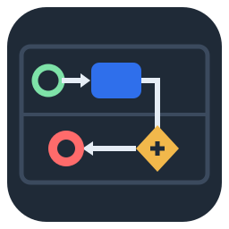
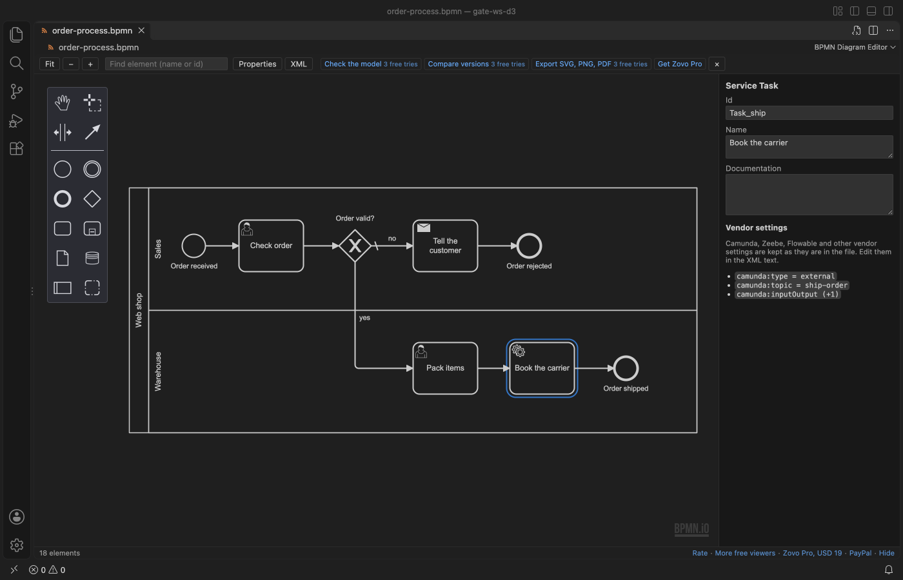

BPMN Diagram Editor & Viewer
BPMN Diagram Editor & Viewer, a VS Code extension by Zovo
BPMN editor and viewer for VS Code, by Zovo. Click a .bpmn file and it opens as a diagram you can pan, zoom and edit: events, tasks, gateways, pools, lanes and message flows. Saving writes standard BPMN 2.0 XML and changes only the lines your edit touched, so Camunda, Zeebe and Flowable settings, comments and your own formatting stay as they were.
Free, MIT license. Needs VS Code 1.75.0 or newer. Extension ID zovo.zovo-bpmn-editor, version 0.1.0.
Free, offline, no account. Zovo Pro: USD 19 once, for this and every other Zovo extension. It adds a model check, a visual compare and SVG, PNG and PDF export, with 3 free tries of each. Everything free stays free.

A real VS Code window running this extension on samples/order-process.bpmn, the sample that ships with it.
Free
- Open any BPMN 2.0 file as a diagram:
.bpmn,.bpmn2and.bpmn20.xml, from Camunda 7 and 8 (Zeebe), Flowable, Activiti and other modeling tools. Fit, zoom, and find an element by name or id. - Edit with a palette: start, end and intermediate events, tasks, sub-processes, gateways, data objects, pools, lanes and message flows. Click an element for its menu: append the next step, change its type, connect, add a lane above or below, delete.
- Save safely. A rename changes one line; a moved task changes only its coordinates and the arrows that follow it. Vendor attributes and extension elements, XML comments, blank lines, indentation, attribute order and the namespace prefixes of the file stay byte for byte.
- A properties panel for the id, name, documentation and the condition of a flow, with the Camunda, Zeebe or Flowable settings of the selected element listed read-only.
- Keep the XML side by side. The XML button opens the same file as text. Type in the XML and the diagram redraws. Undo and redo are the ones of VS Code, so they work across both views.
- See clear errors. A file that is not valid XML shows the reason and the line, and the file is never touched.
Quick start
- Install BPMN Diagram Editor & Viewer.
- Click a
.bpmnfile in the Explorer. No file at hand? Run "BPMN: Open the Sample Diagram" or "BPMN: New BPMN Diagram" from the Command Palette. - Edit, then save with
Ctrl+S(Cmd+Son macOS). The tab shows the dot for unsaved changes like any text file, and nothing is written until you save.
Questions people ask
Is BPMN Diagram Editor & Viewer free?
Yes. BPMN Diagram Editor & Viewer is free and MIT licensed.
How do I install BPMN Diagram Editor & Viewer?
Click "Install in VS Code" above, or search for zovo.zovo-bpmn-editor in the Extensions view.
How the save keeps your file
The diagram is drawn with bpmn-js, the open-source BPMN toolkit. When you edit, the extension compares the diagram before and after the edit and writes only the changed lines into your file, in the file's own prefixes and indentation. Before it writes, it checks the result: the file must differ by exactly what the edit changed, compared element by element and attribute by attribute.
- A file that the diagram model reads and writes back in full gets a full write when a line patch is not possible (for example a file with every element on one line).
- A file with content that the model would drop (an XML comment, an attribute with an unknown reference) gets a note above the diagram that lists it. Edits are still saved as line patches. If one cannot be, the edit is not saved and you can choose: open the XML, or save anyway after a list of exactly what would go.
We tried this on 4,333 real BPMN files from open-source projects and the BPMN interchange test suite: a rename plus a move was saved as a line patch in 4,112 files (95 %), as a checked full write in 167, and refused with an explanation in 32 (22 files could not be read or had nothing to edit). No edit was lost and no file changed outside the edit.
Zovo Pro tools (3 free tries each)
- Check the model: 16 rules, such as missing start or end events, flows after an exclusive gateway with no condition, disconnected elements, implicit splits and joins, unnamed activities, message flows inside one pool, elements with no shape and broken references. Problems go to the Problems panel and a Markdown report, with a JSON file for CI. Works on one diagram or a whole folder (right-click it).
- Compare versions: the file against git HEAD or against another
.bpmnfile, side by side, with added, removed, changed and moved elements colored and a change list that jumps to each one. - Export: SVG, PNG or PDF of the diagram (white paper, any editor theme), or a process document in Markdown or HTML with every pool, lane, task, gateway and flow, its documentation and its vendor settings.
Run them from the row above the diagram, from the Command Palette, or by right-clicking a .bpmn file. A try counts only when the tool produced its output.
Settings
bpmnEditor.canvasColors:autofollows the VS Code theme;lightis white paper;darkis a dark canvas. Colors set in the file are always kept.bpmnEditor.showProperties: show or hide the properties panel.bpmnEditor.exportScale: pixel scale of PNG and PDF exports (1 to 4, default 2).bpmnEditor.showProTools: hide the Zovo Pro tools everywhere.
Limits
- Vendor settings (Camunda input and output mappings, Zeebe task definitions, Flowable listeners) are kept and listed, but are edited in the XML text, not in a form.
- Simulation, token play and process deployment are not part of this extension.
- Files from git history and other read-only places open as a viewer with no palette.
- The bpmn.io logo in the corner of the canvas is part of the bpmn-js license and stays visible.
Privacy
The extension makes no network calls of its own. Diagrams, fonts and icons all load from the extension itself. Optional links (rate, Zovo Pro, PayPal) open in your browser only when you click them.
Guides
Install BPMN Diagram Editor & Viewer
Click the button to open VS Code and install it, or press Ctrl+P (Cmd+P on macOS) in VS Code and run ext install zovo.zovo-bpmn-editor.
Free, MIT license. Needs VS Code 1.75.0 or newer. Extension ID zovo.zovo-bpmn-editor, version 0.1.0.
Source code and issues are on GitHub.
Zovo Pro and support
Zovo Pro: USD 19 once, every Zovo viewer. It turns on the Pro tools in this extension and in the other Zovo extensions you use. The free features stay free.
After a card payment your license key shows on the next page. Paste it with the command "Zovo Pro: Enter a key".
You can also support the work with no Pro:
Need your format supported?
Open a format request with a sample file, and I reply there whether it can be done. For USD 299 once, through this GitHub Sponsors tier, I add your file format or a missing feature to this extension, with tests, within 7 days.